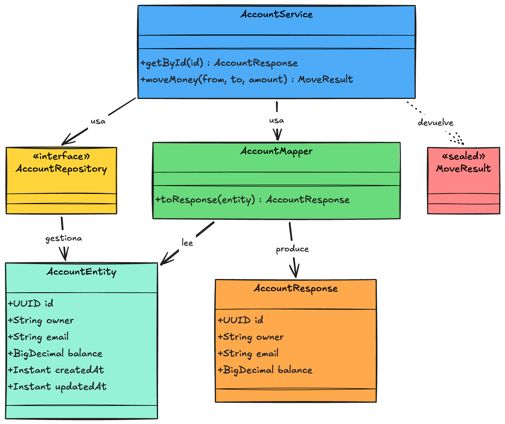

Fase 3 · Transferencias con validación¶
Rama: fase-3
Lo que vas a lograr: mover plata de una cuenta a otra con un POST, validando el saldo, todo dentro de una transacción que no puede dejar cuentas a medias.
Parte 1 — El resultado como sealed class¶
Una transferencia puede terminar de varias formas: se completa, no hay saldo, o una de las cuentas no existe. En vez de andar con excepciones o con un booleano pobre, modelamos el resultado con un tipo que enumera exactamente los finales posibles. Va en el domain de account, porque mover plata entre cuentas es, en el fondo, una operación sobre cuentas.
package com.baqjug.wallet.account.domain
import java.util.UUID
sealed class MoveResult {
data object Success : MoveResult()
data object InsufficientFunds : MoveResult()
data class AccountNotFound(val id: UUID) : MoveResult()
}
Kotlin al paso: sealed class
Una sealed class es una jerarquía cerrada: sus únicas subclases son las que declaras, acá mismo. El compilador conoce toda la lista. ¿Por qué importa? Porque cuando decidas qué hacer según el resultado, si te falta un caso, Kotlin te lo marca. Es un enum con esteroides: cada caso puede llevar datos propios (fíjate que AccountNotFound carga el id que falló).
Kotlin al paso: data object vs data class
Success e InsufficientFunds no cargan datos, por eso son data object: existe una sola instancia, como un singleton. AccountNotFound sí lleva un id, por eso es data class. Usa object cuando el caso es único y sin datos, class cuando necesita cargar algo.
Parte 2 — Mover la plata, en el domain de account¶
Le sumamos una operación al AccountService que ya teníamos. Como es una clase concreta (no una interfaz), agregamos el método directo, sin tocar ningún contrato aparte. Acá está el corazón de la wallet:
fun moveMoney(fromId: UUID, toId: UUID, amount: BigDecimal): MoveResult {
val from = repository.findById(fromId).orElse(null)
?: return MoveResult.AccountNotFound(fromId)
val to = repository.findById(toId).orElse(null)
?: return MoveResult.AccountNotFound(toId)
if (from.balance < amount) {
return MoveResult.InsufficientFunds
}
from.balance = from.balance.subtract(amount)
to.balance = to.balance.add(amount)
repository.save(from)
repository.save(to)
return MoveResult.Success
}
Línea por línea, lo que hace:
- Busca la cuenta de origen (
findById(fromId)); si no existe, corta de una conAccountNotFound(fromId)gracias al operador Elvis?:. - Busca la de destino, igual; si falta,
AccountNotFound(toId). - Valida el saldo: si
from.balance < amount, devuelveInsufficientFundssin mover un peso. - Mueve la plata: debita el origen (
subtract) y acredita el destino (add). - Persiste las dos cuentas y devuelve
Success.
La clave está en el paso 5 junto con la transacción: como el método es @Transactional, los dos save se confirman juntos. Si el segundo falla, el primero se revierte y ninguna cuenta queda a medias.
Como este método sí escribe en la base, la transacción de la clase cambia: subimos @Transactional (lectura y escritura) al nivel de la clase, y dejamos el getById como solo-lectura a nivel de método. La clase completa queda así:
@Service
@Transactional
class AccountService(
private val repository: AccountRepository
) {
@Transactional(readOnly = true)
fun getById(id: UUID): AccountResponse {
val account = repository.findById(id)
.orElseThrow { AccountNotFoundException(id) }
return AccountMapper.toResponse(account)
}
fun moveMoney(fromId: UUID, toId: UUID, amount: BigDecimal): MoveResult {
// ...el cuerpo que mostramos arriba...
}
}
Spring al paso: @Transactional que escribe, y por qué es clave acá
@Transactional envuelve el método en una transacción. Todo lo que pase adentro se confirma junto (commit) o se deshace junto (rollback). Si al guardar la segunda cuenta algo explota, la primera no queda debitada: la transacción entera se revierte. Esto es lo que garantiza que nunca quede una cuenta con plata de menos y la otra sin la de más.
Kotlin al paso: el operador Elvis ?:
repository.findById(id).orElse(null) ?: return ... se lee así: intenta obtener la cuenta; si es null, ejecuta lo de la derecha (retornar el resultado de "no encontrada"). El ?: se llama operador Elvis y es el atajo de Kotlin para "si esto es nulo, entonces aquello". Corta el flujo temprano y deja el resto del método con la cuenta ya garantizada no nula.
Sobre concurrencia (para no engañarte)
Este moveMoney es correcto para el taller, pero dos transferencias en paralelo sobre la misma cuenta podrían pisarse. En producción se resuelve con bloqueo optimista (una columna @Version) o pesimista. Lo menciono para que sepas que existe; implementarlo queda para la Fase 8.
Parte 3 — La petición y su validación¶
La feature transfer recibe la petición. Su DTO valida la forma de los datos antes de que lleguen a la lógica.
package com.baqjug.wallet.transfer.domain
import jakarta.validation.constraints.DecimalMin
import jakarta.validation.constraints.NotNull
import java.math.BigDecimal
import java.util.UUID
data class TransferRequest(
@field:NotNull
val fromId: UUID,
@field:NotNull
val toId: UUID,
@field:NotNull
@field:DecimalMin(value = "0.01", message = "El monto debe ser mayor a cero")
val amount: BigDecimal
)
El prefijo @field: es obligatorio en Kotlin
En Kotlin, una anotación de validación sobre una propiedad tiene que ir con @field:. Sin ese prefijo, la validación no corre, y lo peor es que no falla: simplemente se ignora en silencio. Es el error más común al validar DTOs en Kotlin. Si tu validación "no funciona", revisa esto primero.
Parte 4 — El servicio y el controlador de transfer¶
El servicio de transfer es una clase concreta en su domain. Orquesta el caso de uso: valida, le pide el movimiento a account, y decide qué hacer con cada desenlace. Acá es donde vive la lógica, no en el controller.
account.moveMoney nos devuelve un MoveResult (la sealed class de la Parte 1). El servicio hace el when sobre ese resultado: si salió bien, termina; si no, lanza una excepción de dominio que describe el problema.
package com.baqjug.wallet.transfer.domain
import com.baqjug.wallet.account.domain.AccountNotFoundException
import com.baqjug.wallet.account.domain.AccountService
import com.baqjug.wallet.account.domain.InsufficientFundsException
import com.baqjug.wallet.account.domain.MoveResult
import org.springframework.stereotype.Service
@Service
class TransferService(
private val accountService: AccountService
) {
fun transfer(request: TransferRequest) {
require(request.fromId != request.toId) {
"No puedes transferir a la misma cuenta"
}
// Movemos la plata y miramos cómo salió.
when (val result = accountService.moveMoney(request.fromId, request.toId, request.amount)) {
is MoveResult.Success -> {
// Salió bien. Por ahora no hay nada más que hacer;
// en la Fase 4, aquí mismo registraremos el movimiento.
}
is MoveResult.InsufficientFunds -> throw InsufficientFundsException()
is MoveResult.AccountNotFound -> throw AccountNotFoundException(result.id)
}
}
}
Y la excepción nueva para el saldo insuficiente, junto a las demás de account:
package com.baqjug.wallet.account.domain
class InsufficientFundsException :
RuntimeException("Saldo insuficiente para la transferencia")
Fíjate en el desacople
transfer no toca la base ni sabe cómo se guardan las cuentas. Pide el AccountService de la feature account, delega el movimiento, e interpreta el resultado. Su trabajo es orquestar el caso de uso, no manejar plata a mano.
Kotlin al paso: when sobre una sealed class
when es como un switch, pero de verdad. Sobre una sealed class, Kotlin conoce todos los casos: si te olvidas de manejar uno, no compila. Por eso no necesitas un else. Fíjate el when (val result = ...): guarda el resultado en result y ramifica según su tipo con is. Cuando entra por AccountNotFound, ya puedes leer result.id. Acá el when decide, por cada desenlace, si seguir o lanzar una excepción.
Kotlin al paso: Unit y una rama que 'no hace nada'
En Kotlin, una función que no devuelve nada devuelve Unit, que es el equivalente de void en Java: el "no hay valor que entregar". Cuando usas when como instrucción (no como valor que asignas), cada rama simplemente ejecuta código, y una rama perfectamente válida es "no hacer nada": un bloque vacío { }. Eso es lo que pasa hoy en Success: la transferencia salió bien y todavía no hay más que hacer. El when sigue siendo exhaustivo —manejamos los tres casos, que es lo que Kotlin exige sobre una sealed class— y en la Fase 4 esa rama dejará de estar vacía cuando le metamos el registro del movimiento. Por ahí verás la forma corta -> Unit para decir lo mismo; el bloque vacío con un comentario es más honesto sobre la intención.
Concepto al paso: ¿por qué el when va en el servicio y no en el controller?
Decidir qué significa "saldo insuficiente" o "cuenta no existe" es una decisión de negocio, y las decisiones viven en el domain. El controller solo debería recibir la petición y devolver la respuesta, sin ramificar sobre resultados. Por eso el when está en el TransferService: si mañana esta misma transferencia se dispara desde una tarea programada o un test, la lógica de "qué hago con cada desenlace" ya está donde debe, y no hay que copiarla en cada puerta de entrada.
Ahora el controlador queda flaco: recibe, delega y responde. Ni un if, ni un when.
package com.baqjug.wallet.transfer.web
import com.baqjug.wallet.transfer.domain.TransferRequest
import com.baqjug.wallet.transfer.domain.TransferService
import jakarta.validation.Valid
import org.springframework.http.ResponseEntity
import org.springframework.web.bind.annotation.PostMapping
import org.springframework.web.bind.annotation.RequestBody
import org.springframework.web.bind.annotation.RequestMapping
import org.springframework.web.bind.annotation.RestController
@RestController
@RequestMapping("/api/transfers")
class TransferController(
private val transferService: TransferService
) {
@PostMapping
fun transfer(@Valid @RequestBody request: TransferRequest): ResponseEntity<Map<String, String>> {
transferService.transfer(request)
return ResponseEntity.ok(mapOf("status" to "COMPLETED"))
}
}
Spring al paso: @PostMapping, @RequestBody, @Valid
@PostMapping atiende un POST. @RequestBody toma el JSON del cuerpo y lo convierte en tu TransferRequest. @Valid dispara las validaciones que pusimos con @field:; si alguna falla, Spring responde 400 antes de que tu código corra. Ojo con la distinción: eso valida la forma de los datos (que el monto no sea nulo, que sea mayor a cero), y es correcto hacerlo acá, en el borde. Lo que NO va en el controller es la lógica de negocio.
Falta traducir las excepciones que lanza el servicio a códigos HTTP. Eso lo hace el GlobalExceptionHandler que montamos en la Fase 2: le sumamos los casos nuevos.
package com.baqjug.wallet.web.exception
import com.baqjug.wallet.account.domain.AccountNotFoundException
import com.baqjug.wallet.account.domain.InsufficientFundsException
import org.springframework.http.HttpStatus
import org.springframework.http.ResponseEntity
import org.springframework.web.bind.annotation.ExceptionHandler
import org.springframework.web.bind.annotation.RestControllerAdvice
@RestControllerAdvice
class GlobalExceptionHandler {
@ExceptionHandler(AccountNotFoundException::class)
fun handleNotFound(ex: AccountNotFoundException): ResponseEntity<Map<String, String>> =
ResponseEntity.status(HttpStatus.NOT_FOUND)
.body(mapOf("error" to (ex.message ?: "Cuenta no encontrada")))
@ExceptionHandler(InsufficientFundsException::class)
fun handleInsufficientFunds(ex: InsufficientFundsException): ResponseEntity<Map<String, String>> =
ResponseEntity.unprocessableEntity()
.body(mapOf("error" to (ex.message ?: "Saldo insuficiente")))
@ExceptionHandler(IllegalArgumentException::class)
fun handleBadRequest(ex: IllegalArgumentException): ResponseEntity<Map<String, String>> =
ResponseEntity.badRequest()
.body(mapOf("error" to (ex.message ?: "Petición inválida")))
}
Spring al paso: un solo lugar para traducir errores
Fíjate el patrón completo: el domain lanza excepciones que dicen QUÉ pasó (InsufficientFundsException), sin saber nada de HTTP. El GlobalExceptionHandler, en la capa web, traduce cada una al código correcto: 422 para saldo insuficiente, 404 para cuenta inexistente, y 400 para una petición inválida (como transferir a la misma cuenta, que dispara el require). Toda la traducción error→HTTP vive en un solo archivo, y los controllers quedan limpios.
Parte 5 — Probar la transferencia¶
curl -X POST http://localhost:8080/api/transfers \
-H "Content-Type: application/json" \
-d '{
"fromId": "11111111-1111-1111-1111-111111111111",
"toId": "22222222-2222-2222-2222-222222222222",
"amount": 30000.00
}'
Consulta los saldos después: Elena quedó en 70000 y Geovanny en 30000. Intenta ahora transferir 999999 y te da 422 Saldo insuficiente, sin mover un peso.
Con esto, la feature account ya tiene todas sus piezas conectadas: la entidad, el DTO, el mapper, el servicio y el repositorio.

El diagrama, pieza por pieza:
AccountEntity— la entidad JPA, el mapeo de la tablaaccounts. Vive puertas adentro; el cliente nunca la ve.AccountResponse— el DTO de salida, lo que sí ve el cliente. Expone solo lo que debe.AccountMapper— traduceAccountEntity→AccountResponse. Esa conversión se arma en un solo lugar.AccountRepository— la interfaz de acceso a datos; Spring Data la implementa sola.AccountService— el corazón: usa el repositorio y el mapper para leer, y para mover plata devuelve unMoveResult, la sealed class con los tres desenlaces.
Fíjate cómo entidad, DTO, mapper, repositorio y servicio viven todos dentro de la feature account, en el mismo paquete. Eso es package by feature: lo que cambia junto, junto.
Cierre de la fase¶
./gradlew compileKotlin
git add .
git commit -m "fase-3: transferencia transaccional con validación de saldo y resultado sealed"
git branch fase-3
La wallet ya mueve plata de verdad. En la Fase 4 dejamos registrado cada movimiento, primero con una llamada directa. Ese registro es la pieza que más adelante convertimos en un evento.